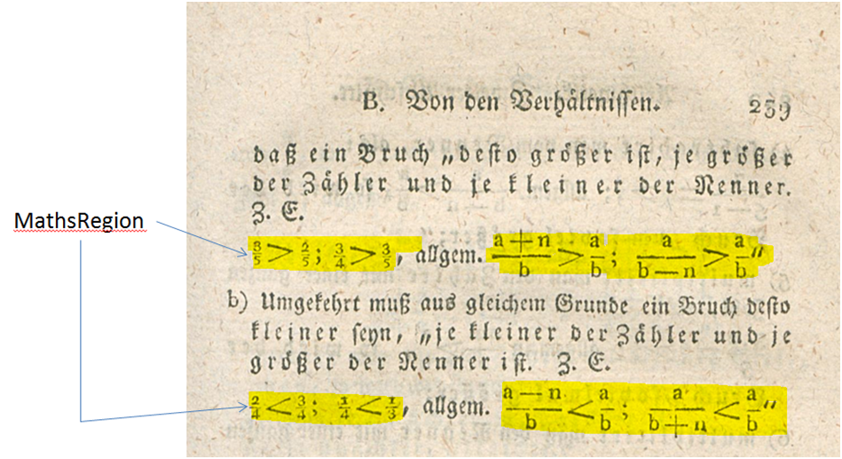
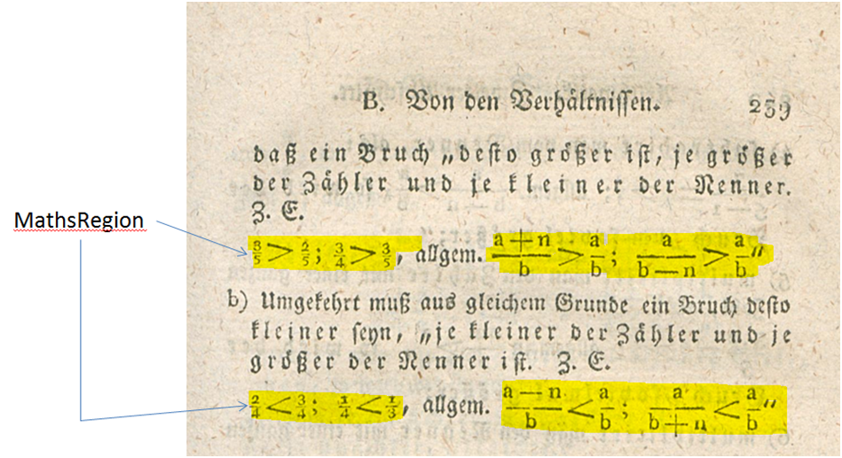

Mathematical characters (MathsRegion)
Equations, formulas, mathematical expressions (even if individual characters could be represented) are not recorded as text, but marked as MathsRegion.

Equations, formulas, mathematical expressions (even if individual characters could be represented) are not recorded as text, but marked as MathsRegion.
